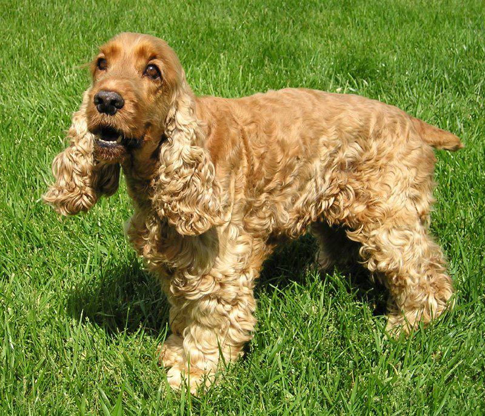

Английский кокер-спаниель

Происхождение: Великобритания
Размер: Средние (рост: 38–41 см, вес: 12–15 кг).
Характер: Дружелюбные, энергичные, общительные.
Особенности: Длинные уши требуют регулярной чистки. Любят охоту и активные игры. Хорошо ладят с детьми и другими животными
Здоровье: Возможны проблемы с ушами (отиты), глазами.